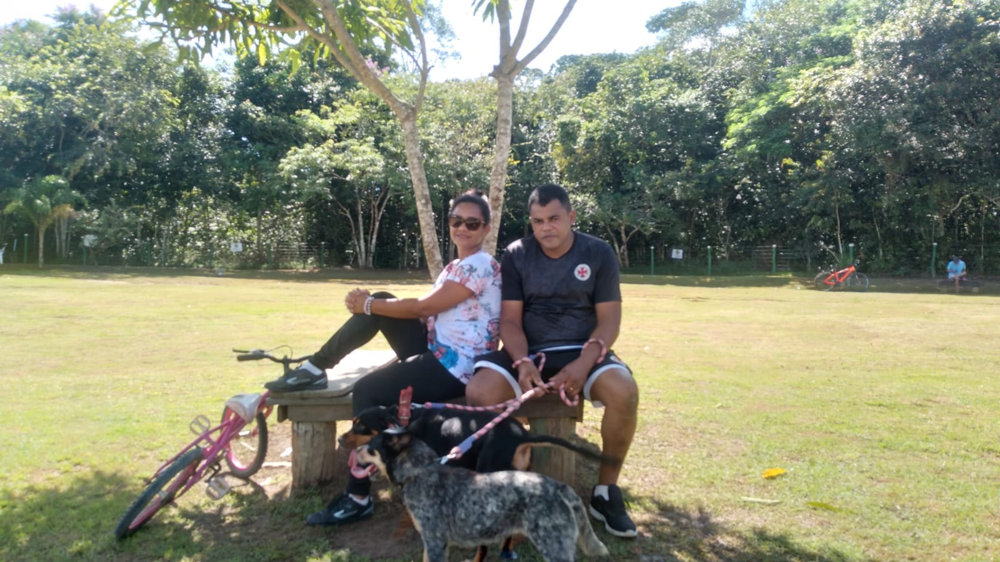
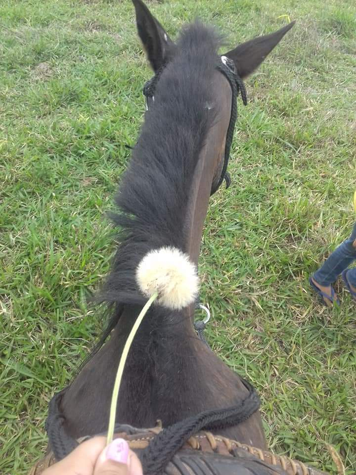
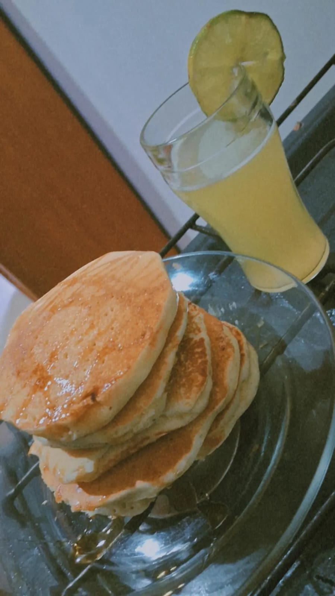
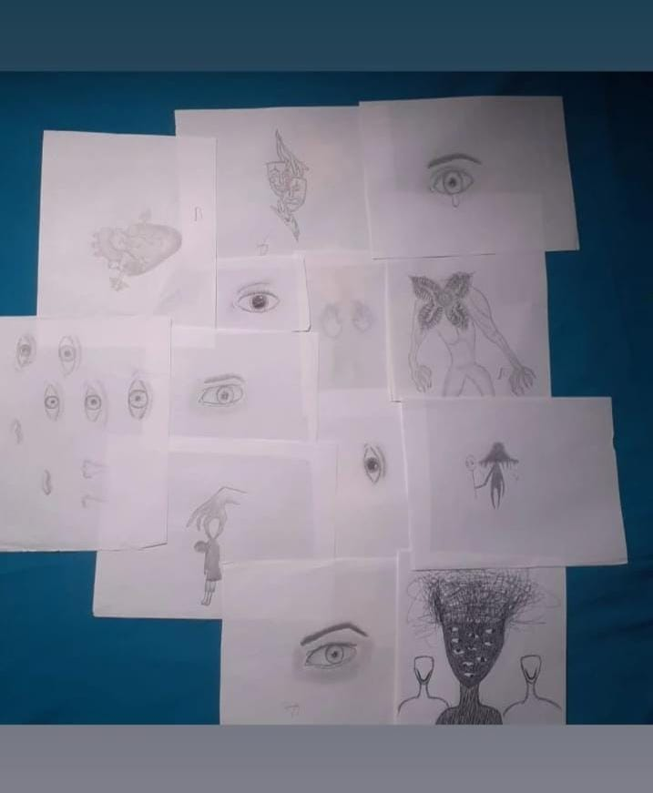

Sobre Mim
Minha jornada começou em Vilhena, onde nasci, mas a vida me levou a Comodoro, onde cresci. Retornei a Vilhena para cursar o ensino médio no IFRO, e hoje,
escrevo minha história enquanto vivo com meus tios, carregando comigo as experiências que moldaram quem
sou.
gostei de andar a cavalo, algo que costumava fazer quando visitava o sítio dos meus avós nos finais de semana.
Hoje em dia, não ando mais a cavalo, mas ainda lembro com carinho desses momentos.
Gosto de cozinhar no meu tempo livre,
preparando sobremesas.
Eu costumava desenhar como hobby, mas, atualmente, já não pratico mais essa atividade.
Desenhar fazia parte do meu cotidiano no passado.
